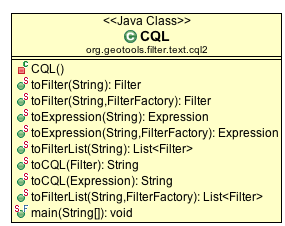

CQL¶
The CQL utility class provides a nice front end to produce Filters and Expressions from a text String.
References:
- uDig Common Query Language (wiki)
CQL Utility Class¶
The CQL utility class consists of static methods you can call to convert a text String into an Expression, Filter or List<Filter>. It is also able ot take these these items and produce the appropriate text representation.
The following are examples of use for the CQL to Filter parser. For a full understanding of the predicate language, refer to the BNF .
Running¶
As you can see above the CQL class can be run on the command line.
It allows you to try out the CQL examples on this page; and produces the XML Filter representation of the result.:
CQL Filter Tester
("quit" to finish)
>attr > 10
<?xml version="1.0" encoding="UTF-8"?>
<ogc:PropertyIsGreaterThan xmlns="http://www.opengis.net/ogc" xmlns:ogc="http://www.opengis.net/ogc" xmlns:gml="http://www.opengis.net/gml">
<ogc:PropertyName>attr</ogc:PropertyName>
<ogc:Literal>10</ogc:Literal>
</ogc:PropertyIsGreaterThan>
>quit
Bye!
Examples¶
Simple example:
Filter filter = CQL.toFilter("attName >= 5");will give you a GeoAPI Filter correspondent to:
<ogc:Filter xmlns:ogc="http://www.opengis.net/ogc" xmlns:gml="http://www.opengis.net/gml"> <ogc:PropertyIsGreaterThanOrEqualTo> <ogc:PropertyName>attName</ogc:PropertyName> <ogc:Literal>5</ogc:Literal> </ogc:PropertyIsGreaterThanOrEqualTo> </ogc:Filter>You can output the text again using:
CQL.toCQL( filter );
Parsing a single Expression
If you want to parse a single Expression instead of a Filter:
Expression expr = CQL.toExpression("attName");You can get the text again using:
CQL.toCQL( expr );
Parsing a list of Filters
It is even possible to parse a list of Filters at once. This is useful for applications like GeoServer which, for example, allows to define a filter predicate for each layer in a WMS GetMap request.
Separate out each filter using a ”;” character:
List filters = CQL.toFilterList("att1 > 5;ogc:name = 'river'");In this example, you’ll get two filters, since the ”;” character acts as delimiter.
Using your own FilterFactory.
If you already have a factory around no sense forcing CQL to create one internally:
Filter filter = CQL.toFilter("attName >= 5", filterFactory );Include and Exclude
You can represent the include and exclude tokens:
String cql = "INCLUDE;EXCLUDE"; List filters = CQL.toFilterList(cql);
Reminder:
- INCLUDE is a null indicating you do not wish to apply any constraints at all.
- EXCLUDE is used to filter all content.
Filter by Comparing Values:
Filter result = CQL.toFilter("ATTR1 < (1 + ((2 / 3) * 4))" ); Filter result = CQL.toFilter("ATTR1 < abs(ATTR2)" ); Filter result = CQL.toFilter("ATTR1 < 10 AND ATTR2 < 2 OR ATTR3 > 10" );Filter using Text:
Filter result = CQL.toFilter( "ATTR1 LIKE 'abc%'" ); Filter result = CQL.toFilter( "ATTR1 NOT LIKE 'abc%'" );
Filter Nulls:
Filter result = CQL.toFilter( "ATTR1 IS NULL" ); Filter result = CQL.toFilter( "ATTR1 IS NOT NULL" ); Filter by Comparing Time values
Filter by Comparing Time values
Equal to a date:
Filter result = CQL.toFilter( "ATTR1 TEQUALS 2006-11-30T01:30:00Z" );
Before a date:
Before filter = (Before) CQL.toFilter("lastEarthQuake BEFORE 2006-11-30T01:30:00Z");
Before a period:
Filter result = CQL.toFilter( "ATTR1 BEFORE 2006-11-30T01:30:00Z/2006-12-31T01:30:00Z" );
After a date:
After filter = (After) CQL.toFilter("lastEarthQuake AFTER 2006-11-30T01:30:00Z");
After a date using time zone GMT+3:
After filter = (After) CQL.toFilter("lastEarthQuake AFTER 2006-11-30T01:30:00+03:00");
After a period:
Filter result = CQL.toFilter( "ATTR1 AFTER 2006-11-30T01:30:00Z/2006-12-31T01:30:00Z" );
Temporal predicate with duration (ten day after 2006-11-30T01:30:00Z ):
Filter result = CQL.toFilter( "ATTR1 AFTER 2006-11-30T01:30:00Z/P10D" ); Filter result = CQL.toFilter( "ATTR1 AFTER 2006-11-30T01:30:00Z/T10H" );
During predicate:
During filter = (During) CQL.toFilter("lastEarthQuake DURING 1700-01-01T00:00:00/2011-01-01T00:00:00");
Filter based on Existence
- Check if something exists::
Filter result = CQL.toFilter( “ATTR1 EXISTS” );
Check if something does not exist:
Filter result = CQL.toFilter( "ATTR1 DOES-NOT-EXIST" );
Filter by checking if a Value is Between:
Filter result = CQL.toFilter( "ATTR1 BETWEEN 10 AND 20" );
Using Compound Attributes:
Filter result = CQL.toFilter( "gmd:MD_Metadata.gmd:identificationInfo.gmd:MD_DataIdentification.gmd:abstract LIKE 'abc%'" );
Filter using Geometry Relationship:
Filter result = CQL.toFilter( "CONTAINS(ATTR1, POINT(1 2))" ); Filter result = CQL.toFilter( "BBOX(ATTR1, 10,20,30,40)" ); Filter result = CQL.toFilter( "DWITHIN(ATTR1, POINT(1 2), 10, kilometers)" ); Filter result = CQL.toFilter( "CROSS(ATTR1, LINESTRING(1 2, 10 15))" ); Filter result = CQL.toFilter( "INTERSECT(ATTR1, GEOMETRYCOLLECTION (POINT (10 10),POINT (30 30),LINESTRING (15 15, 20 20)) )" ); Filter result = CQL.toFilter( "CROSSES(ATTR1, LINESTRING(1 2, 10 15))" ); Filter result = CQL.toFilter( "INTERSECTS(ATTR1, GEOMETRYCOLLECTION (POINT (10 10),POINT (30 30),LINESTRING (15 15, 20 20)) )" );
The followning example shows how to make a filter using the RELATE geooperation. In this case, the DE-9IM pattern corresponds to the contains spatial relation, It will be true if the first geometry contains the second.
Filter filter = ECQL.toFilter( "RELATE(geometry, LINESTRING (-134.921387 58.687767, -135.303391 59.092838), T*****FF*)");